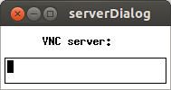
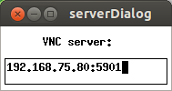
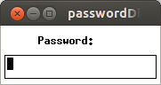
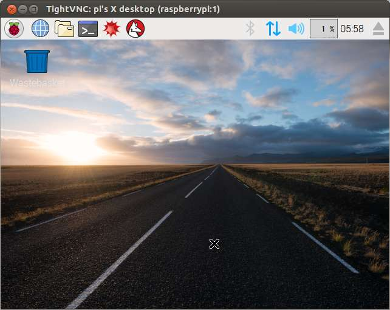

使用的树莓派的时候，虽然可以直接用USBTTL来操作，但是没法多个终端并行，而且不能使用浏览器等等，有些时候还是不得不使用图形界面。
穷屄买不起HDMI接口的显示器怎么办，就用远程桌面！
首先用USBTTL开minicom向树莓派输入如下命令：
sudo apt-get install tightvncserver
安装好tightvncserver之后，就可以开启一个VNC服务进程了，命令：
tightvncserver
如果是第一次运行，那么会提示输入密码。然后会提示
New 'X' desktop is raspberrypi:1
:1就是指1号远程桌面进程。对于第i号远程桌面进程，其监听的端口号就是5900+i。
当然，也可以设置很多参数，比如分辨率：
tightvncserver -geometry 640x480
接着，在电脑上安装xtightvncview：
sudo apt-get install xtightvncviewer
然后运行xtightvncviewer，命令如下：
xtightvncviewer
xtightvncviewer的图形界面我也不想吐槽了，相当简易：

这个界面是让你输入VNC服务器的端口和地址。假设我的树莓派的地址是192.168.75.80，端口是5901，那么输入192.168.75.80:5901，然后回车：

如果能够连上，就会要求输入密码：

回车之后，如果正确，那么就会显示树莓派的桌面了：
